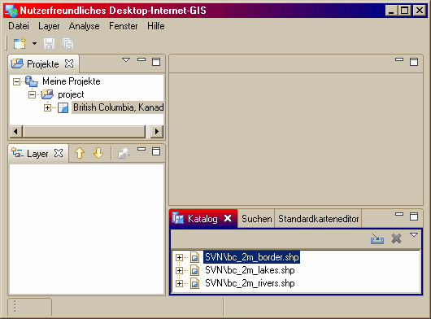
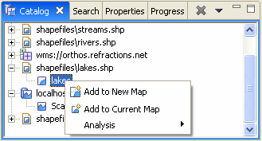
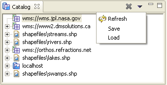

Im folgenden Bild ist das Projektfenster aktiv.

Bevor Sie mit diesem Abschnitts beginnen, ist es nötig, die verschiedenen Elemente der Arbeitsfläche zu kennen. Es sind dies:
Dabei werden Fenster in der Regel verwendet, um Informationen wie z.B. Ressourcen hierarchisch darzustellen, einen Editor für diese zu öffnen oder Eigenschaften des aktuellen Editors anzuzeigen. In einem Fenster durchgeführte Aktionen treten sofort in Kraft. Im Normalfall existiert jeder Fenstertyp nur einmal auf der Arbeitsfläche.
Dem gegenüber dient ein Editor zum Bearbeiten oder Durchsuchen einer Ressource. Veränderungen, die in einem Editor durchgeführt werden, folgen dem Zyklus "Öffnen" – "Speichern" – "Schließen". Mehrere Editoren können zur gleichen Zeit auf der Arbeitsfläche aktiv sein.
Fenster und Editoren teilen einige Eigenschaften. Sie werden daher intern als Arbeitsflächenelement bezeichnet. Beide können aktiv und inaktiv sein, aber nur ein Arbeitsflächenelement kann stets aktiv sein. Dessen Titelleiste ("Reiter" genannt) ist farblich hervorgehoben. Aktionen wie Ausschneiden, Kopieren und Einfügen wirken im aktiven Arbeitsflächenelement. Es bestimmt zudem den Inhalt der Statuszeile. Ist der Reiter eines Editors weiß, ist er zwar nicht aktiv, jedoch zeigen andere Fenster ggf. Informationen dieses zuletzt aktiven Editors an.
Im folgenden Bild ist das Projektfenster aktiv.
Klickt man auf den Katalog, so wird dessen Titelzeile farbig hervorgehoben. Er ist nun anstelle des Projektfensters aktiv.

Je nach zu bearbeitendem Dateityp wird der entsprechende Editor im Editorbereich angezeigt. Wird zum Beispiel eine Karte bearbeitet, ist dort der Karteneditor zu sehen. Die untenstehende Abbildung zeigt einen Editor beim Bearbeiten einer Kontinentkarte. Der Name der Karte wird auf dem Reiter angezeigt. Ein Asterisk ("*") dort bedeutet, daß die Karte ungespeicherte Änderungen besitzt. Wird versucht, die Karte in diesem Zustand zu schließen oder den Arbeitsplatz zu verlassen, erscheint eine Meldung, die Sie fragt, ob diese Änderungen gespeichert werden sollen.

Ist der Editor aktiv, enthalten das Menü und die Symbolleiste Aktionen, die speziell für diesen Editor zutreffen. Ist ein anderes Fenster offen, sind diese Aktionen inaktiv, es sei denn sie ergeben auch für dieses Fenster Sinn.
Editoren können im Editorbereich gesammelt werden. Jeder dieser Editoren kann durch Klick auf den jeweiligen Reiter aktiviert werden. Editoren können aber auch Seite an Seite oder untereinander angeordnet werden, um beispielsweise ihre Inhalte gleichzeitig sehen zu können. Im untenstehenden Bild sind Editoren für Länder und Seen nebeneinander angeordnet. Hinweise zum An- und Umordnen von Fenstern werden später in diesem Tutorial gegeben.

Die weiteren Fenster unterstützen die Editoren und bieten alternative Darstellungen oder Navigationshilfen für die Informationen des Arbeitsplatzes.

Zum Beispiel zeigt der Katalog alle Datenquellen des Arbeitsplatzes zusammen mit den Namen ihrer Layer. Das Projektfenster zeigt die Projekte und anderen Ressourcen.
Ein Fenster kann alleine oder in der Gruppe mit anderen Fenstern als Registerkarte angeordnet sein. Zum Aktivieren eines Registerkartenfensters klickt man einfach auf dessen Reiter. Die (Eclipse-basierte) Arbeitsfläche bietet eine Vielzahl schneller und einfacher Wege, diese nach eigenen Vorstellungen zu konfigurieren. Man kann beispielsweise wählen, ob die Reiter über oder unter den Registerkarten angezeigt werden.
Fenster besitzen zwei Menüs: Das erste wird durch einen Rechtsklick auf den Reiter aktiviert und zeigt Einträge ähnlich dem Menü Fenster des Arbeitsplatzes.

Das zweite Menu, ein sogenanntes "Pulldown-Menü", wird durch einen Klick auf die Pfeilschaltfläche angezeigt. Das Pulldown-Menü zeigt üblicherweise Operationen, die den Inhalt des gesamten Fenster betreffen, nicht jedoch einen bestimmten oder nur ausgewählte Einträge. Dazu zählen oft das Sortieren und Filtern der Einträge.

Ein zusätzliches Fenster kann angezeigt werden, indem man es im Menü unter Fenster > Fenster anzeigen auswählt.
Weiter im Tutorial: Ein einfaches Projekt
(c) Copyright (c) 2004-2008 Refractions Research Inc. and others.